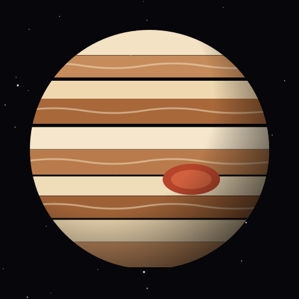
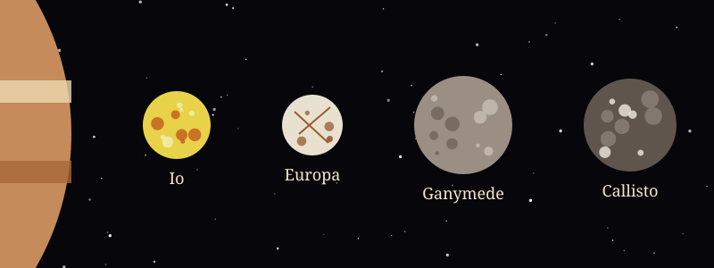

The Giant Planet
Jupiter is the largest planet in the solar system. It is more than twice as massive as all of the other planets put together.
Jupiter is a gas giant made mostly of hydrogen and helium, so it has no solid surface to stand on. Its colorful stripes are bands of clouds pushed by powerful winds.

Jupiter Facts
- SizeAbout 139,820 km across, 11 times wider than Earth.
- DistanceAbout 778 million km (5.2 AU) from the Sun.
- Shortest daySpins once every 9 hours and 56 minutes, the fastest of any planet.
- YearOne orbit takes about 12 Earth years.
- Great Red SpotA giant storm wider than Earth that has raged for hundreds of years.
- MoonsMore than 90 known moons, including the four large Galilean moons.
Meet the Galilean Moons
In 1610 Galileo Galilei spotted Jupiter's four biggest moons through his telescope. Click a tab to learn about each one.
Io is the most volcanically active world in the solar system, with hundreds of volcanoes, some shooting lava fountains dozens of kilometers high.
Europa is covered by a shell of ice. Scientists think a salty ocean lies underneath, making it one of the best places to look for life beyond Earth.
Ganymede is the largest moon in the solar system. It is even bigger than the planet Mercury and is the only moon known to have its own magnetic field.
Callisto has one of the most heavily cratered surfaces in the solar system. Its old, icy crust has barely changed in billions of years.

A Planet-Sized Storm
The Great Red Spot is a storm with winds faster than 400 km/h. It has been watched since at least the 1830s and may be much older.
The storm has been shrinking over the past century, but it is still wider than Earth.